library(raw) # R Actuarial Workshop
data("RegionExperience")
RegionExperience$Region_f <- factor(RegionExperience$Region)
head(RegionExperience, 3)
## Region PolicyYear NumPolicies NumClaims Region_f
## 1 North Central 2001 579 4285 North Central
## 2 North Central 2002 585 4459 North Central
## 3 North Central 2003 588 4312 North Central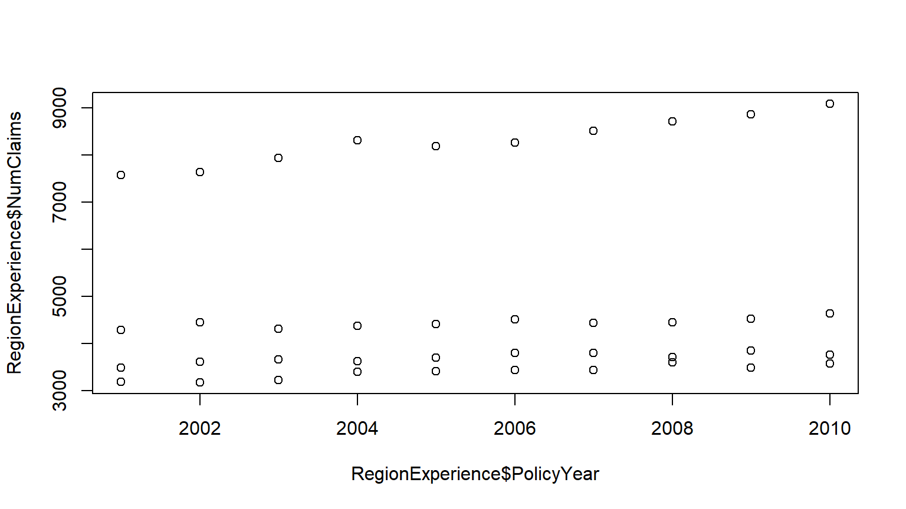
# some more customization
# ex: pch affects how the "dot" looks
plot(RegionExperience$PolicyYear
, RegionExperience$NumClaims
, pch = 19
, xlab = 'Policy Year'
, ylab = '# of claims')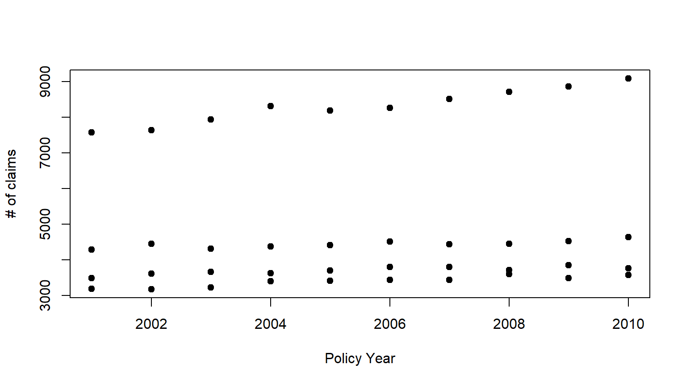
# some more customization
# ex: pch affects how the "dot" looks
plot(RegionExperience$PolicyYear
, RegionExperience$NumClaims
, col = RegionExperience$Region_f
, pch = 19
, xlab = 'Policy Year', ylab = '# of claims'
, main = 'Claim counts', ylim=c(0, 10000))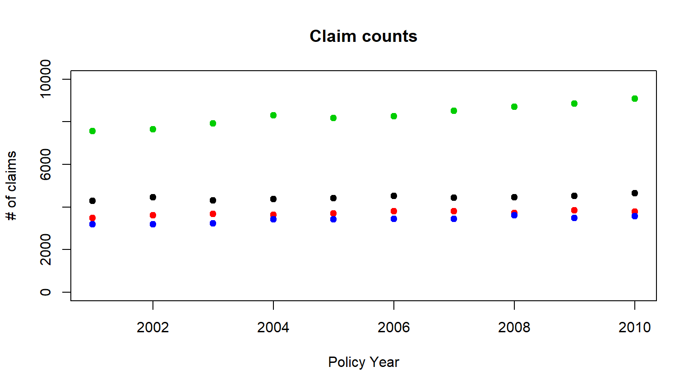
gg = “grammar of graphics” based on Leland Wilkinson
Data must use a data frame.
Mappings bind data to visual elements. Every data-derived visual element must be mapped to data.
Although we have data and we’ve mapped to elements of a coordinate system, we haven’t specified what the visual elements should be. The geom_* family of functions add geometric shapes.
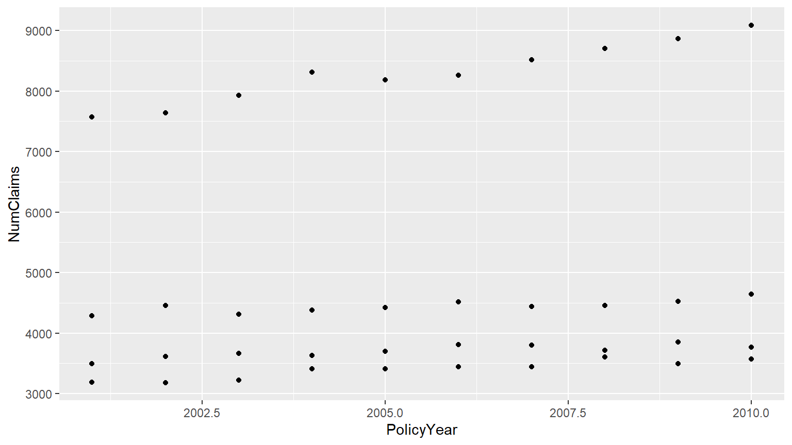
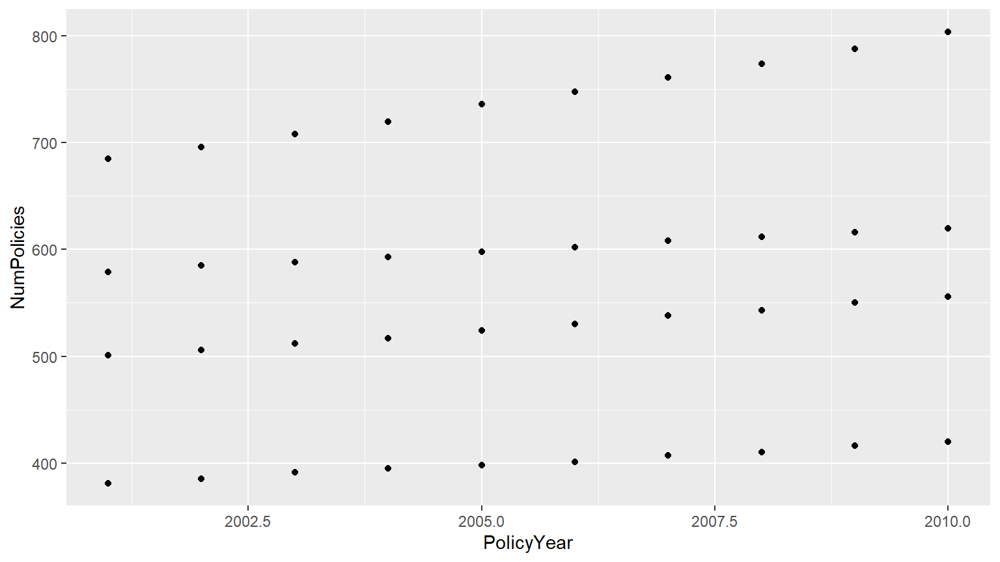
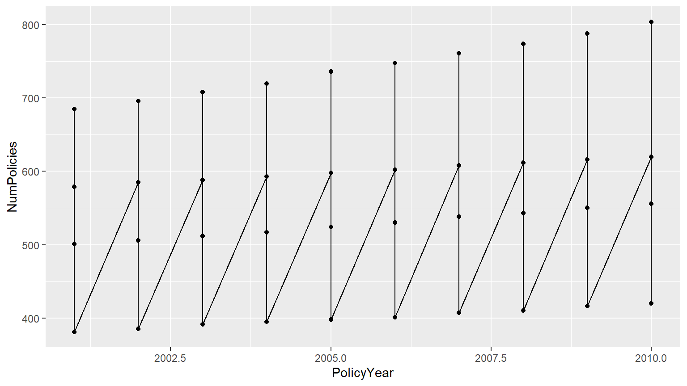
RegionExperience %>%
ggplot(aes(x=PolicyYear, y=NumPolicies)) +
geom_point() +
geom_line(aes(color=Region))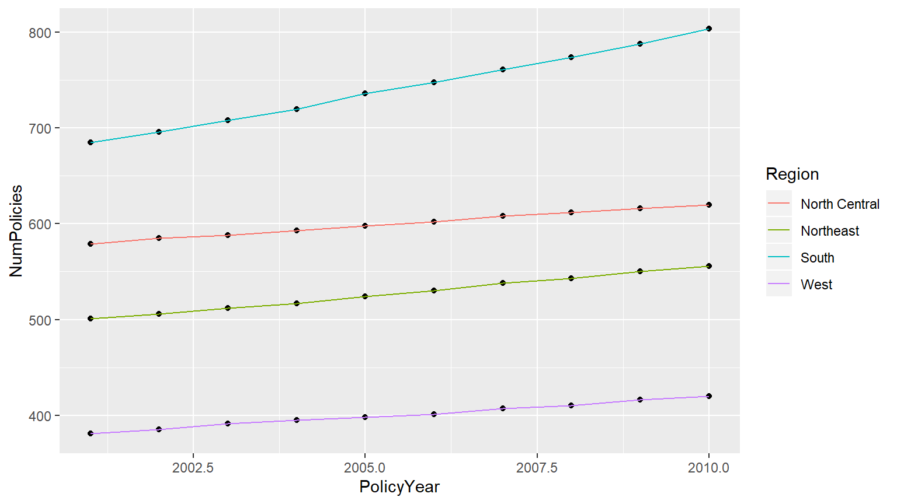
RegionExperience %>%
ggplot(aes(x=PolicyYear, y=NumPolicies)) +
geom_point() +
geom_smooth(method=lm, aes(color=Region))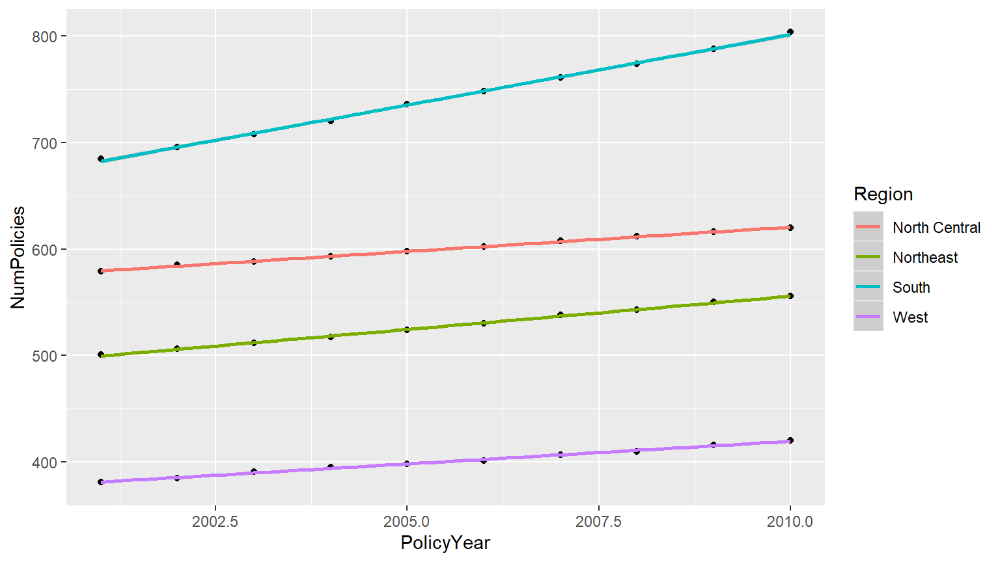
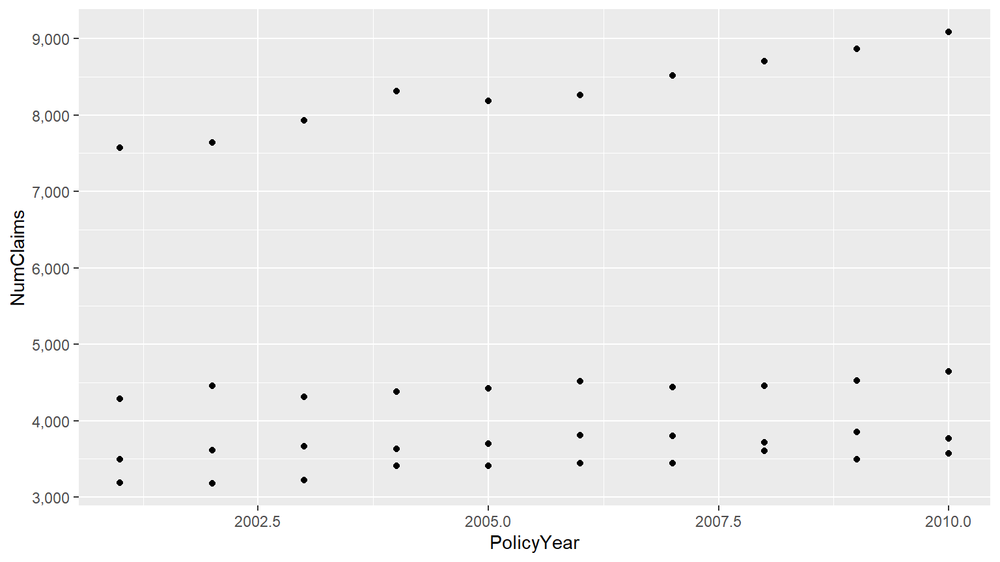
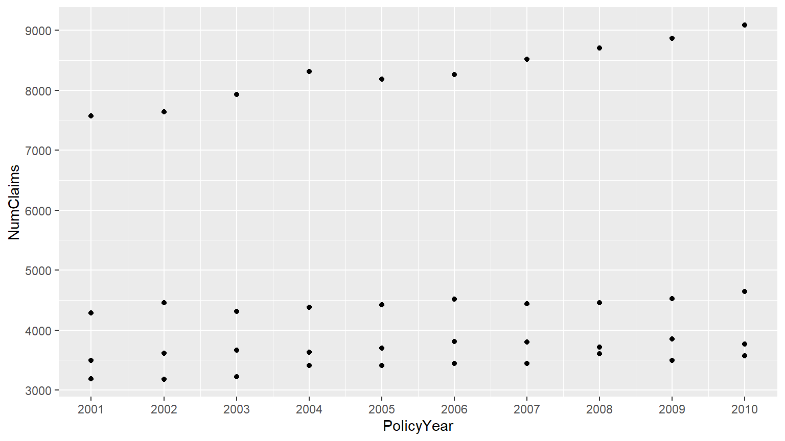
Facets split the data into groups and draws a different plot for each group.
ggplot(RegionExperience, aes(x=PolicyYear, y=NumClaims, color=Region)) +
geom_point() + facet_wrap(~ Region)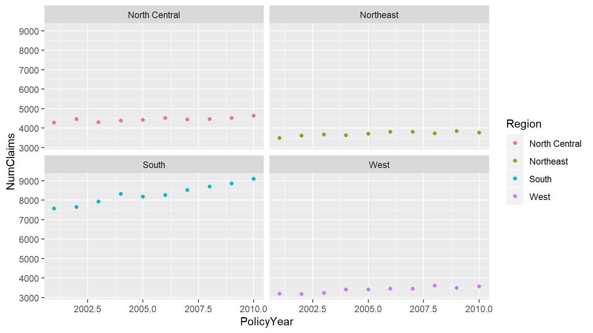
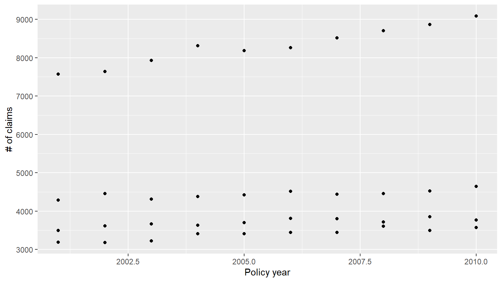
TODO: complete this section
Line chart, bar chart, boxplot, scatterplots, dumbbell plot, violin plot, heatmaps, trellis plots, slopecharts, more!
Extra credit:
Use the state data to create a time series number of claims. Facet by region.
library(raw)
data("RegionExperience")
plt1 <- ggplot(RegionExperience, aes(x = PolicyYear, y = NumClaims)) + geom_point()
plt1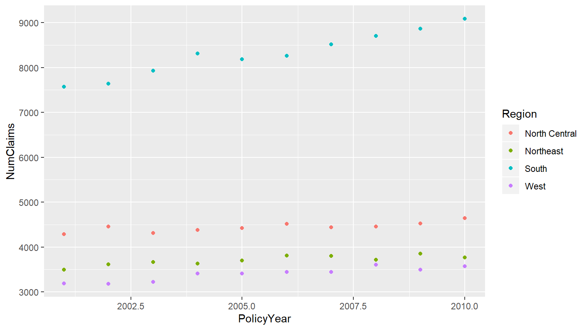
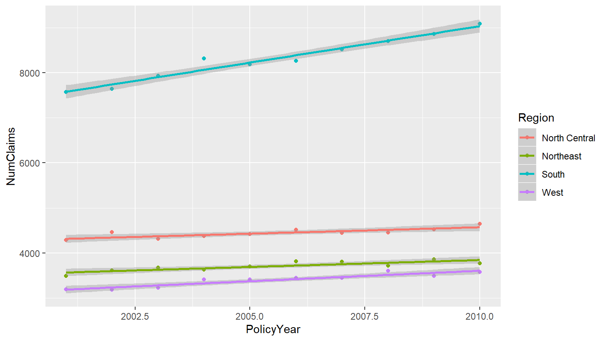
RegionExperience$Frequency <- with(RegionExperience, NumClaims / NumPolicies)
plt4 <- ggplot(RegionExperience, aes(x=PolicyYear, y=Frequency, color=Region)) + geom_point()+
geom_line() + stat_smooth(method=lm)
plt4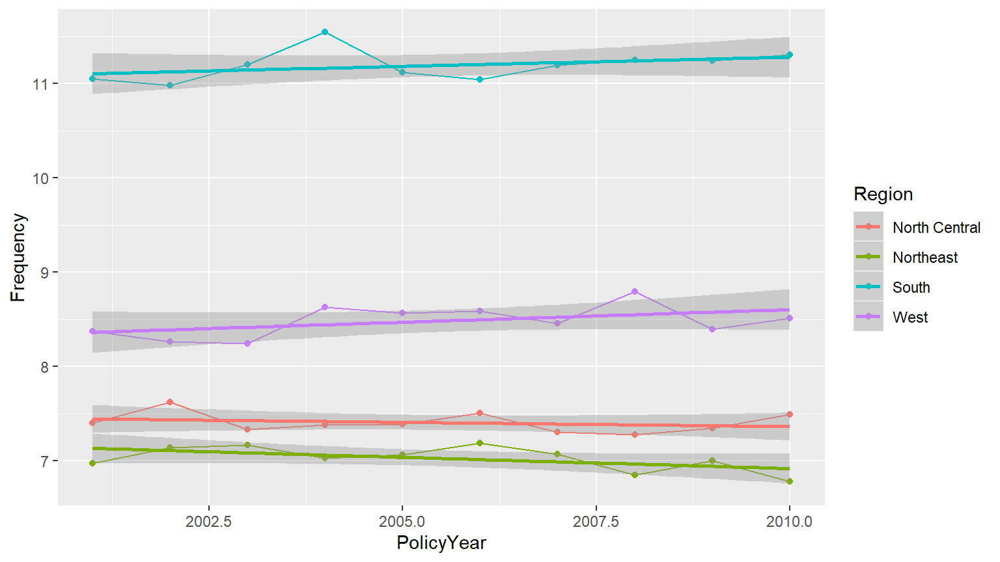
{r} --> data("StateExperience") pltExtra <- ggplot(StateExperience, aes(x=PolicyYear, y=NumClaims, color=Postal)) + geom_point() + geom_line() pltExtra + facet_wrap(~ Region)
ggplot2 is different at first, but will repay your investment.